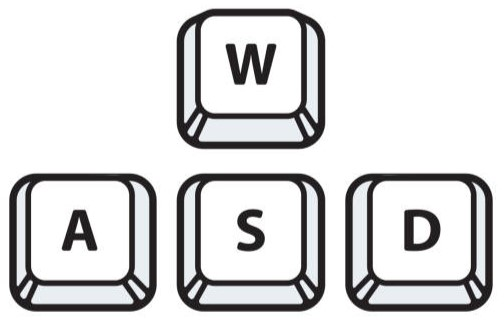

JOURNEY TO THE SEA
An Attack on Titan Maze Game
Backstory
During a Survey Corps' expedition beyond Wall Maria, when are following the trail left by a crawling titan, they end up at the ocean. However, during the journey Eren gets distracted by some birds which causes him to get separated from the rest of the group. Assist him in reuniting with his friends at the ocean where they await him.
How to Play
- Use the WASD keys to guide Eren.

- Be cautious and avoid titans to prevent restarting.
- Interact with specific obstacles to teleport within the maze.


- Navigate through the titan-infested maze.
- Reach the ocean by touching the Wings of Freedom.
Click the Image Below to Start the Game!